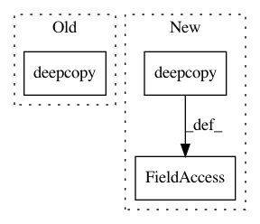

5b3af9ff43bc61f8034f1202a2b57f21c8ee3771,autokeras/graph.py,Graph,to_add_skip_model,#Graph#Any#Any#,377
Before Change
for index, layer_id in enumerate(layer_list):
layer = self.layer_list[layer_id]
new_node_id = self._add_new_node()
self._add_edge(deepcopy(layer), skip_output_id, new_node_id)
skip_output_id = new_node_id
// Add the conv layer
After Change
// Add the add layer.
dropout_output_id = self.adj_list[dropout_input_id][0][0]
add_input_node_id = self._add_node(deepcopy(self.node_list[dropout_output_id]))
add_layer = StubAdd()
self._redirect_edge(dropout_input_id, dropout_output_id, add_input_node_id)
self._add_edge(add_layer, add_input_node_id, dropout_output_id)
self._add_edge(add_layer, skip_output_id, dropout_output_id)
add_layer.input = [self.node_list[add_input_node_id], self.node_list[skip_output_id]]
add_layer.output = self.node_list[dropout_output_id]
self.node_list[dropout_output_id].shape = add_layer.output_shape
In pattern: SUPERPATTERN
Frequency: 3
Non-data size: 3
Instances
Project Name: keras-team/autokeras
Commit Name: 5b3af9ff43bc61f8034f1202a2b57f21c8ee3771
Time: 2018-08-01
Author: jin@tamu.edu
File Name: autokeras/graph.py
Class Name: Graph
Method Name: to_add_skip_model
Project Name: keras-team/keras
Commit Name: be24159959672c32abb31697e721d96ae6ffaf97
Time: 2016-02-27
Author: ipod825@gmail.com
File Name: keras/wrappers/scikit_learn.py
Class Name: BaseWrapper
Method Name: fit
Project Name: keras-team/autokeras
Commit Name: 5b3af9ff43bc61f8034f1202a2b57f21c8ee3771
Time: 2018-08-01
Author: jin@tamu.edu
File Name: autokeras/graph.py
Class Name: Graph
Method Name: to_concat_skip_model